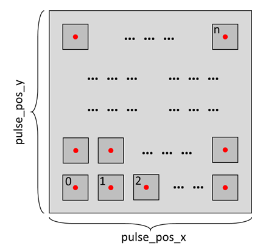

Domain Writing Workflow#
\(_{Yongtao}\) \(_{Liu,}\) \(_{liuy3@ornl.gov}\)
\(_{June}\) \(_{2023}\)
Switching ferroelectric polarization by applying a pulse bias in piezoresponse force microscopy (PFM) allows researchers to investigate and characterize ferroelectric properties, e.g., understanding ferroelectric domain structure and switching dynamics.
Here, we will show you a high-throughput workflow allowing to investigate the parameters of pulse bias and ferroelectric polarization switching.
This notebook contains two parts: first is experimentation, second is data analysis. Both parts work independently.
Experiments#
Install and Import#
import os
import win32com.client
import numpy as np
import time
import h5py
import sidpy
import pyNSID
import matplotlib.pyplot as plt
from tqdm import tqdm
from AEcroscopy import Acquisition
# # import acquition.py
# from Acquisition_v0_9 import Acquisition # include the Acquistion_v.py in the same directory
Start BEPyAE.exe and set VI#
Start BEPyAE.ext
Set VI of BEPyAE; if this version includes PyScanner, also set VIs for PyScanner
newexp = Acquisition(exe_path = r"C:\Users\BEPyAE 060523 01\BEPyAE.exe")
# exe_path is the directory of BEPyAE;
Initialize Igor AR18#
Set offline development
Build a connection between BEPyAE and AR18
Get parameters in AR18
newexp.init_BEPyAE(offline_development = True) # set offline_development=True if doing offline development
# executing this will also initlize AR18
Set tip parameters#
set setpoint, tip locations
newexp.tip_control(tip_parms_dict = {"set_point_V_00": 1, "next_x_pos_00": -0.5, "next_y_pos_01": 0.5},
do_move_tip = True,
do_set_setpoint = True) # Executing this code will set setpoint to 1 V,
# and move tip to location [0.5, 0.5]
Setpoint is: 1.0
Tip parameters are: (-0.5, 0.5, 0.2)
Set IO#
This defines IO parameters, such as AFM platform: AR18, amplifiers, channel data types, etc
newexp.define_io_cluster(IO_cluster_parms_dict = {"analog_output_amplifier_06": 1,
"channel_01_type_07": 1,
"channel_02_type_08": 2,"channel_03_type_09": 3,})
('0 Cypher AR18',
'6124',
4000000.0,
10.0,
10.0,
'AC and DC on AO0',
10.0,
'topography',
'current',
'aux',
'external')
Set BE pulse parameters#
# set BE parameters
newexp.define_be_parms(be_parms_dict = {"center_frequency_Hz_00": 335, "band_width_Hz_01": 100,
"amplitude_V_02": 1, "phase_variation_03": 1,
"repeats_04": 4, "req_pulse_duration_s_05": 4,
"auto_smooth_ring_06": 1},
do_create_be_waveform = True)
BE parameters are: (335000.0, 100000.0, 1.0, 1.0, 4, 0.004, 1, 3352.2952763920002, 0.12159459061880915)
Run a BE Line scan to test parameters#
This is a single BE line scan
This returns 5 datasets: quick_fitting, complex spectra, and 3 channels
# Do a single line scan
qk_fit, com_spec, chn1, chn2, chn3 = newexp.do_line_scan(line_scan_parms_dict = {"num_BE_pulses_01": 32,
"start_x_pos_00": -0.5, "start_y_pos_01": 0,
"stop_x_pos_02": 0.5, "stop_y_pos_03": 0},
upload_to_daq = True, do_line_scan = True)
voltage offset and number of BE pulse are: (0.0, 32)
line scan start and end positions: (-0.5, 0.0, 0.5, 0.0)
Tests Done
Experiment Starts#
In this experiment, we begin by applying a DC pulse to switch the ferroelectric polarization. Subsequently, a BEPFM (Bias-Enhanced Piezoresponse Force Microscopy) measurement is conducted to image the domain structure.
To initiate the measurement process, we first need to determine the location for each individual measurement. There are two scenarios to consider:

For each measurement, a new location is chosen, requiring a location array to record all the measurements as demonstrated below.
{kind=link}
Alternatively, all measurements are conducted at the same location. In this case, the measurement location needs to be initialized each time a new measurement is started, as shown below.
{kind=link}
Prior to experiments, we also need to establish the DC pulse parameters including pulse magnitude \(A\) and pulse length \(t\) , as shown below. Again, there are two scenarios to consider here:
{kind=link}
The pulse parameters can be pre-defined, e.g., the parameter values can be uniformly distributed within a specified range or customized to suit the experimental requirements.
The pulse parameters can be random values within a defined space, typically these random values is a uniform distribution across that space in principle.
Experiment 1. Perform each measurement at a new location with pre-defined pulse parameters#
Prior to expeirment, set a directory to save data#
os.chdir(r"C:\Users\yla\Dropbox (ORNL)\My Files\AEcroscopy_BEPyAE")
Step 1. Generate a location array#
# All locations span across [start_point_x, end_point_x] in x-direction and [start_point_y, end_point_y] in y-direction.
# There are num_x rows and num_y columns in the locations array
start_point_x = -0.9 # Define location array parameters
end_point_x = 0.9
start_point_y = -0.9
end_point_y = 0.9
num_x = 2
num_y = 2
# Generate location array
pos_x = np.linspace(-0.9, 0.9, num_x)
pos_y = np.linspace(-0.9, 0.9, num_y)
pulse_pos = np.meshgrid(pos_x, pos_y)
pulse_pos_x = pulse_pos[0].reshape(-1)
pulse_pos_y = pulse_pos[1].reshape(-1) # pulse_pos_x and pulse_pos_y are the coordinates of all locations
# Set BEPFM image size
img_size = 0.1
# Check
if img_size > np.abs(pos_x[0]-pos_x[1]):
print ("Alert: there will be image overlap along x-direction")
elif img_size > np.abs(pos_y[0]-pos_y[1]):
print ("Alert: there will be image overlap along y-direction")
else:
print("{} locations are ready for experiments".format(len(pulse_pos_x)))
4 locations are ready for experiments
Step 2. Establish pulse parameters#
# uniformly distributed pulse parameters
min_voltage = 5
max_voltage = 9
Vdc_amp = np.linspace(min_voltage, max_voltage, num_x) # pulse magnitude
min_time_log = -4
max_time_log = 1
Vdc_time = np.linspace(min_time_log, max_time_log, num_y, dtype = np.float32())
Vdc_time = np.power(10, Vdc_time) # pulse time
# Establish pulse parameters
Vdc = np.meshgrid(Vdc_amp, Vdc_time)
Vdc_amp = Vdc[0].reshape(-1)
Vdc_time = Vdc[1].reshape(-1)
if len(Vdc_amp) > len(pulse_pos_x):
print ("Error: No enough locations to test all pulse conditions")
else:
print ("{} pulse parameters are ready for expierments".format(len(Vdc_amp)))
# save pulse condition
np.save("Vdc_list.npy", np.asarray([Vdc_amp, Vdc_time]))
4 pulse parameters are ready for expierments
Step 3. Start experiment#
for i in tqdm(range(len(Vdc_amp))):
#####################----------- Move tip to the pulse location -----------#####################
newexp.tip_control(tip_parms_dict = {"set_point_V_00": 1,
"next_x_pos_00": pulse_pos_x[i],
"next_y_pos_01": pulse_pos_y[i]},
do_move_tip = True, do_set_setpoint = True)
time.sleep(0.2)
#####################----------- Apply pulse -----------#####################
V_amp = Vdc_amp[i]
V_time = Vdc_time[i]
newexp.define_apply_pulse(pulse_parms_dict = {"pulse_init_amplitude_V_00": 0, "pulse_mid_amplitude_V_01": V_amp,
"pulse_final_amplitude_V_02": 0, "pulse_on_duration_s_03": V_time,
"rise_time_s_05": 1E-4, "pulse_final_duration_s_04": 20E-3,
"pulse_repeats_06": 1},
do_create_pulse = True, do_upload_pulse = True, do_apply_pulse = False)
#
time.sleep(1)
newexp.define_apply_pulse(pulse_parms_dict = {"pulse_init_amplitude_V_00": 0, "pulse_mid_amplitude_V_01": V_amp,
"pulse_final_amplitude_V_02": 0, "pulse_on_duration_s_03": V_time,
"rise_time_s_05": 1E-4, "pulse_final_duration_s_04": 20E-3,
"pulse_repeats_06": 1},
do_create_pulse = True, do_upload_pulse = True, do_apply_pulse = True)
time.sleep(2)
#####################----------- Do BEPFM to image domain -----------#####################
dset_pfm, dset_chns, dset_cs = newexp.raster_scan(raster_parms_dict = {"scan_pixel": 16,
"scan_x_start": pulse_pos_x[i]-(img_size/2),
"scan_y_start": pulse_pos_y[i]-(img_size/2),
"scan_x_stop": pulse_pos_x[i]+(img_size/2),
"scan_y_stop": pulse_pos_y[i]+(img_size/2)},
file_name = "Domain_Writing_{}".format(i),
progress_on = False, ploton = False)
time.sleep(0.5)
# Plot BEPFM images
f, (ax1, ax2, ax3, ax4, ax5, ax6) = plt.subplots(1, 6, figsize = (30, 5), dpi = 100)
ax1.imshow(dset_pfm[:,:,0])
ax2.imshow(dset_pfm[:,:,1])
ax3.imshow(dset_pfm[:,:,2])
ax4.imshow(dset_pfm[:,:,3])
ax5.imshow(dset_chns[0,:,:])
ax6.imshow(dset_chns[1,:,:])
plt.show()
0%| | 0/4 [00:00<?, ?it/s]
Setpoint is: 1.0
Tip parameters are: (-0.9, -0.9, 0.5)
C:\Users\yla\AppData\Local\anaconda3\lib\site-packages\pyNSID\io\hdf_utils.py:376: FutureWarning: validate_h5_dimension may be removed in a future version
warn('validate_h5_dimension may be removed in a future version',
C:\Users\yla\AppData\Local\anaconda3\lib\site-packages\pyNSID\io\hdf_utils.py:376: FutureWarning: validate_h5_dimension may be removed in a future version
warn('validate_h5_dimension may be removed in a future version',
C:\Users\yla\AppData\Local\anaconda3\lib\site-packages\pyNSID\io\hdf_utils.py:376: FutureWarning: validate_h5_dimension may be removed in a future version
warn('validate_h5_dimension may be removed in a future version',
25%| | 1/4 [00:28<01:25, 28.36s/it]
Setpoint is: 1.0
Tip parameters are: (0.9, -0.9, 0.5)
C:\Users\yla\AppData\Local\anaconda3\lib\site-packages\pyNSID\io\hdf_utils.py:376: FutureWarning: validate_h5_dimension may be removed in a future version
warn('validate_h5_dimension may be removed in a future version',
C:\Users\yla\AppData\Local\anaconda3\lib\site-packages\pyNSID\io\hdf_utils.py:376: FutureWarning: validate_h5_dimension may be removed in a future version
warn('validate_h5_dimension may be removed in a future version',
C:\Users\yla\AppData\Local\anaconda3\lib\site-packages\pyNSID\io\hdf_utils.py:376: FutureWarning: validate_h5_dimension may be removed in a future version
warn('validate_h5_dimension may be removed in a future version',
50%| | 2/4 [00:56<00:56, 28.33s/it]
Setpoint is: 1.0
Tip parameters are: (-0.9, 0.9, 0.5)
C:\Users\yla\AppData\Local\anaconda3\lib\site-packages\pyNSID\io\hdf_utils.py:376: FutureWarning: validate_h5_dimension may be removed in a future version
warn('validate_h5_dimension may be removed in a future version',
C:\Users\yla\AppData\Local\anaconda3\lib\site-packages\pyNSID\io\hdf_utils.py:376: FutureWarning: validate_h5_dimension may be removed in a future version
warn('validate_h5_dimension may be removed in a future version',
C:\Users\yla\AppData\Local\anaconda3\lib\site-packages\pyNSID\io\hdf_utils.py:376: FutureWarning: validate_h5_dimension may be removed in a future version
warn('validate_h5_dimension may be removed in a future version',
75%| | 3/4 [01:55<00:42, 42.22s/it]
Setpoint is: 1.0
Tip parameters are: (0.9, 0.9, 0.5)
C:\Users\yla\AppData\Local\anaconda3\lib\site-packages\pyNSID\io\hdf_utils.py:376: FutureWarning: validate_h5_dimension may be removed in a future version
warn('validate_h5_dimension may be removed in a future version',
C:\Users\yla\AppData\Local\anaconda3\lib\site-packages\pyNSID\io\hdf_utils.py:376: FutureWarning: validate_h5_dimension may be removed in a future version
warn('validate_h5_dimension may be removed in a future version',
C:\Users\yla\AppData\Local\anaconda3\lib\site-packages\pyNSID\io\hdf_utils.py:376: FutureWarning: validate_h5_dimension may be removed in a future version
warn('validate_h5_dimension may be removed in a future version',

100%|| 4/4 [02:53<00:00, 43.50s/it]
Step 4. Do a BEPFM at the whole experiment area#
dset_pfm, dset_chns, dset_cs = newexp.raster_scan(raster_parms_dict = {"scan_pixel": 32, "scan_x_start": -1.0,
"scan_y_start": -1.0,"scan_x_stop": 1.0,
"scan_y_stop": 1.0},
file_name = "pfm_whole", ploton = False)
f, (ax1, ax2, ax3, ax4, ax5, ax6) = plt.subplots(1, 6, figsize = (30, 5), dpi = 100)
ax1.imshow(dset_pfm[:,:,0])
ax2.imshow(dset_pfm[:,:,1])
ax3.imshow(dset_pfm[:,:,2])
ax4.imshow(dset_pfm[:,:,3])
ax5.imshow(dset_chns[0,:,:])
ax6.imshow(dset_chns[1,:,:])
plt.show()
[progress: 0:00:35] |************************************ | (ETA: 0:00:01) C:\Users\yla\AppData\Local\anaconda3\lib\site-packages\pyNSID\io\hdf_utils.py:376: FutureWarning: validate_h5_dimension may be removed in a future version
warn('validate_h5_dimension may be removed in a future version',
C:\Users\yla\AppData\Local\anaconda3\lib\site-packages\pyNSID\io\hdf_utils.py:376: FutureWarning: validate_h5_dimension may be removed in a future version
warn('validate_h5_dimension may be removed in a future version',
C:\Users\yla\AppData\Local\anaconda3\lib\site-packages\pyNSID\io\hdf_utils.py:376: FutureWarning: validate_h5_dimension may be removed in a future version
warn('validate_h5_dimension may be removed in a future version',
Experiment 2. Perform measurement with random pulse parameters#
Prior to expeirment, set a directory to save data#
os.chdir(r"C:\Users\My Files")
Step 1. Generate a location array#
# All locations span across [start_point_x, end_point_x] in x-direction and [start_point_y, end_point_y] in y-direction.
# There are num_x rows and num_y columns in the locations array
start_point_x = -0.9 # Define location array parameters
end_point_x = 0.9
start_point_y = -0.9
end_point_y = 0.9
num_x = 2
num_y = 2
# Generate location array
pos_x = np.linspace(-0.9, 0.9, num_x)
pos_y = np.linspace(-0.9, 0.9, num_y)
pulse_pos = np.meshgrid(pos_x, pos_y)
pulse_pos_x = pulse_pos[0].reshape(-1)
pulse_pos_y = pulse_pos[1].reshape(-1) # pulse_pos_x and pulse_pos_y are the coordinates of all locations
# Set BEPFM image size
img_size = 0.1
# Check
if img_size > np.abs(pos_x[0]-pos_x[1]):
print ("Alert: there will be image overlap along x-direction")
elif img_size > np.abs(pos_y[0]-pos_y[1]):
print ("Alert: there will be image overlap along y-direction")
else:
print("{} locations are ready for experiments".format(len(pulse_pos_x)))
4 locations are ready for experiments
Step 2. Establish pulse space#
# pulse magnitude space
min_voltage = 5
max_voltage = 9
# pulse time space
min_time_log = -4
max_time_log = 1
Step 3. Start experiment#
# Set measurement iteration number
iterations = 100
# Set lists to save pulse parameters
Vdc_amp = []
Vdc_time = []
# Measurement starts
for i in tqdm(range(iterations)):
#####################----------- Move tip to the pulse location -----------#####################
newexp.tip_control(tip_parms_dict = {"set_point_V_00": 1,
"next_x_pos_00": pulse_pos_x[i],
"next_y_pos_01": pulse_pos_y[i]},
do_move_tip = True, do_set_setpoint = True)
time.sleep(0.2)
#####################----------- Apply pulse -----------#####################
# Random pulse parameters
V_amp = np.random.uniform(min_voltage, max_voltage)
V_time = np.random.uniform(min_time_log, max_time_log)
V_time = np.power(10, V_time)
# Add parameters to Vdc lists
Vdc_amp.append(V_amp)
Vdc_time.append(V_time)
# Apply pulse
newexp.define_apply_pulse(pulse_parms_dict = {"pulse_init_amplitude_V_00": 0, "pulse_mid_amplitude_V_01": V_amp,
"pulse_final_amplitude_V_02": 0, "pulse_on_duration_s_03": V_time,
"rise_time_s_05": 1E-4, "pulse_final_duration_s_04": 20E-3,
"pulse_repeats_06": 1},
do_create_pulse = True, do_upload_pulse = True, do_apply_pulse = False)
#
time.sleep(1)
newexp.define_apply_pulse(pulse_parms_dict = {"pulse_init_amplitude_V_00": 0, "pulse_mid_amplitude_V_01": V_amp,
"pulse_final_amplitude_V_02": 0, "pulse_on_duration_s_03": V_time,
"rise_time_s_05": 1E-4, "pulse_final_duration_s_04": 20E-3,
"pulse_repeats_06": 1},
do_create_pulse = True, do_upload_pulse = True, do_apply_pulse = True)
time.sleep(2)
#####################----------- Do BEPFM to image domain -----------#####################
dset_pfm, dset_chns, dset_cs = newexp.raster_scan(raster_parms_dict = {"scan_pixel": 16,
"scan_x_start": pulse_pos_x[i]-(img_size/2),
"scan_y_start": pulse_pos_y[i]-(img_size/2),
"scan_x_stop": pulse_pos_x[i]+(img_size/2),
"scan_y_stop": pulse_pos_y[i]+(img_size/2)},
file_name = "Domain_Writing_{}".format(i),
progress_on = False, ploton = False)
time.sleep(0.5)
# Plot BEPFM images
f, (ax1, ax2, ax3, ax4, ax5, ax6) = plt.subplots(1, 6, figsize = (30, 5), dpi = 100)
ax1.imshow(dset_pfm[:,:,0])
ax2.imshow(dset_pfm[:,:,1])
ax3.imshow(dset_pfm[:,:,2])
ax4.imshow(dset_pfm[:,:,3])
ax5.imshow(dset_chns[0,:,:])
ax6.imshow(dset_chns[1,:,:])
plt.show()
# Save pulse parameters
np.save("Vdc_list.npy", np.asarray([Vdc_amp, Vdc_time]))
0%| | 0/100 [00:00<?, ?it/s]
Setpoint is: 1.0
Tip parameters are: (-0.9, -0.9, 0.5)
C:\Users\yla\AppData\Local\anaconda3\lib\site-packages\pyNSID\io\hdf_utils.py:376: FutureWarning: validate_h5_dimension may be removed in a future version
warn('validate_h5_dimension may be removed in a future version',
C:\Users\yla\AppData\Local\anaconda3\lib\site-packages\pyNSID\io\hdf_utils.py:376: FutureWarning: validate_h5_dimension may be removed in a future version
warn('validate_h5_dimension may be removed in a future version',
C:\Users\yla\AppData\Local\anaconda3\lib\site-packages\pyNSID\io\hdf_utils.py:376: FutureWarning: validate_h5_dimension may be removed in a future version
warn('validate_h5_dimension may be removed in a future version',
1%| | 1/100 [00:39<1:04:42, 39.22s/it]
Setpoint is: 1.0
Tip parameters are: (0.9, -0.9, 0.5)
C:\Users\yla\AppData\Local\anaconda3\lib\site-packages\pyNSID\io\hdf_utils.py:376: FutureWarning: validate_h5_dimension may be removed in a future version
warn('validate_h5_dimension may be removed in a future version',
C:\Users\yla\AppData\Local\anaconda3\lib\site-packages\pyNSID\io\hdf_utils.py:376: FutureWarning: validate_h5_dimension may be removed in a future version
warn('validate_h5_dimension may be removed in a future version',
C:\Users\yla\AppData\Local\anaconda3\lib\site-packages\pyNSID\io\hdf_utils.py:376: FutureWarning: validate_h5_dimension may be removed in a future version
warn('validate_h5_dimension may be removed in a future version',
2%| | 2/100 [01:16<1:02:08, 38.05s/it]
Setpoint is: 1.0
Tip parameters are: (-0.9, 0.9, 0.5)
C:\Users\yla\AppData\Local\anaconda3\lib\site-packages\pyNSID\io\hdf_utils.py:376: FutureWarning: validate_h5_dimension may be removed in a future version
warn('validate_h5_dimension may be removed in a future version',
C:\Users\yla\AppData\Local\anaconda3\lib\site-packages\pyNSID\io\hdf_utils.py:376: FutureWarning: validate_h5_dimension may be removed in a future version
warn('validate_h5_dimension may be removed in a future version',
C:\Users\yla\AppData\Local\anaconda3\lib\site-packages\pyNSID\io\hdf_utils.py:376: FutureWarning: validate_h5_dimension may be removed in a future version
warn('validate_h5_dimension may be removed in a future version',
3%| | 3/100 [01:45<54:46, 33.88s/it]
Setpoint is: 1.0
Tip parameters are: (0.9, 0.9, 0.5)
C:\Users\yla\AppData\Local\anaconda3\lib\site-packages\pyNSID\io\hdf_utils.py:376: FutureWarning: validate_h5_dimension may be removed in a future version
warn('validate_h5_dimension may be removed in a future version',
C:\Users\yla\AppData\Local\anaconda3\lib\site-packages\pyNSID\io\hdf_utils.py:376: FutureWarning: validate_h5_dimension may be removed in a future version
warn('validate_h5_dimension may be removed in a future version',
C:\Users\yla\AppData\Local\anaconda3\lib\site-packages\pyNSID\io\hdf_utils.py:376: FutureWarning: validate_h5_dimension may be removed in a future version
warn('validate_h5_dimension may be removed in a future version',
4%| | 4/100 [02:19<55:50, 34.90s/it]
---------------------------------------------------------------------------
IndexError Traceback (most recent call last)
Cell In[19], line 11
7 # Measurement starts
8 for i in tqdm(range(iterations)):
9 #####################----------- Move tip to the pulse location -----------#####################
10 newexp.tip_control(tip_parms_dict = {"set_point_V_00": 1,
---> 11 "next_x_pos_00": pulse_pos_x[i],
12 "next_y_pos_01": pulse_pos_y[i]},
13 do_move_tip = True, do_set_setpoint = True)
14 time.sleep(0.2)
16 #####################----------- Apply pulse -----------#####################
17 # Random pulse parameters
IndexError: index 4 is out of bounds for axis 0 with size 4
Step 4. Do a BEPFM at the whole experiment area#
dset_pfm, dset_chns, dset_cs = newexp.raster_scan(raster_parms_dict = {"scan_pixel": 32, "scan_x_start": -1.0,
"scan_y_start": -1.0,"scan_x_stop": 1.0,
"scan_y_stop": 1.0},
file_name = "pfm_whole", ploton = False)
f, (ax1, ax2, ax3, ax4, ax5, ax6) = plt.subplots(1, 6, figsize = (30, 5), dpi = 100)
ax1.imshow(dset_pfm[:,:,0])
ax2.imshow(dset_pfm[:,:,1])
ax3.imshow(dset_pfm[:,:,2])
ax4.imshow(dset_pfm[:,:,3])
ax5.imshow(dset_chns[0,:,:])
ax6.imshow(dset_chns[1,:,:])
plt.show()
Post Experiment Data Analysis#
Import#
import numpy as np
import matplotlib.pyplot as plt
import os
import h5py
import sidpy
import cv2
import imutils
Set the directory and root name of your dataset#
# directory
path = r"C:\Users\Experiment1"
# name
file_name = "Domain_Writing_"
# spot numbers
num_x = 8
num_y = 8
Load all data#
count_imgs = 64 # variable of how many images you have in the directory
pixel = 64 # pixel of your image
# change working directory
os.chdir(path)
# create arrays for all data
amplitude = np.zeros((count_imgs, pixel, pixel))
phase = np.zeros((count_imgs, pixel, pixel))
frequency = np.zeros((count_imgs, pixel, pixel))
qfactor = np.zeros((count_imgs, pixel, pixel))
topography = np.zeros((count_imgs, pixel, pixel))
for i in range (count_imgs):
h5 = h5py.File('Domain_Writing_{}_0.hf5'.format(i), 'r+')
be_qf = h5["BE Quick Fitting/Quick Fitting/Quick Fitting"]
be_ch = h5["BE Channels/Channels/Channels"]
amplitude[i,] = be_qf[:,:,0]
phase[i,] = be_qf[:,:,3]
frequency[i,] = be_qf[:,:,1]
qfactor[i,] = be_qf[:,:,2]
topography[i,] = be_ch[0,:,:,0]
nor_amplitude = (amplitude-amplitude.min())/amplitude.ptp()
nor_phase = (phase - phase.min())/phase.ptp()
nor_frequency = (frequency - frequency.min())/frequency.ptp()
nor_topography = (topography - topography.min())/topography.ptp()
Plot data#
Plot all results
for i in range (count_imgs):
fig, axs = plt.subplots(1, 4, figsize=(16, 4), dpi = 100)
fig.subplots_adjust(left=0.02, bottom=0.06, right=0.95, top=0.99, wspace=0.25)
cm = 'viridis'
shrink = 0.6
im0 = axs[0].imshow(amplitude[i, ]*1000, origin = "lower", interpolation='nearest', cmap=cm)
fig.colorbar(im0, ax=axs[0], shrink = shrink, label = "Amplitude (a.u.)")
axs[0].axis("off")
im1 = axs[1].imshow(phase[i, ], origin = "lower", interpolation='nearest', cmap=cm)
fig.colorbar(im1, ax=axs[1], shrink = shrink, label = "Phase (rad)")
axs[1].axis("off")
im2 = axs[2].imshow(frequency[i, ]/1000, origin = "lower", interpolation='nearest', cmap=cm)
fig.colorbar(im2, ax=axs[2], shrink = shrink, label = "Frequency (kHz)")
axs[2].axis("off")
im3 = axs[3].imshow(qfactor[i, ], origin = "lower", vmin = 0, vmax = 250, interpolation='nearest', cmap=cm)
fig.colorbar(im0, ax=axs[3], shrink = shrink, label = "Q Factor")
axs[3].axis("off")
plt.show()
Example
Below is an example of a single experiment data.
Plot a specific channel together
fig, axes = plt.subplots(num_y, num_x, figsize=(num_x, num_y),
subplot_kw={'xticks':[], 'yticks':[]},
gridspec_kw=dict(hspace=0.02, wspace=0.02))
for ax, i in zip(axes.flat, range(count_imgs)):
ax.imshow(amplitude[i,], origin = "lower") # We are plotting amplitude now, you can change the channel to phase, frequency,etc
Example
Below is an example of plotting all amplitude image together for comparison.